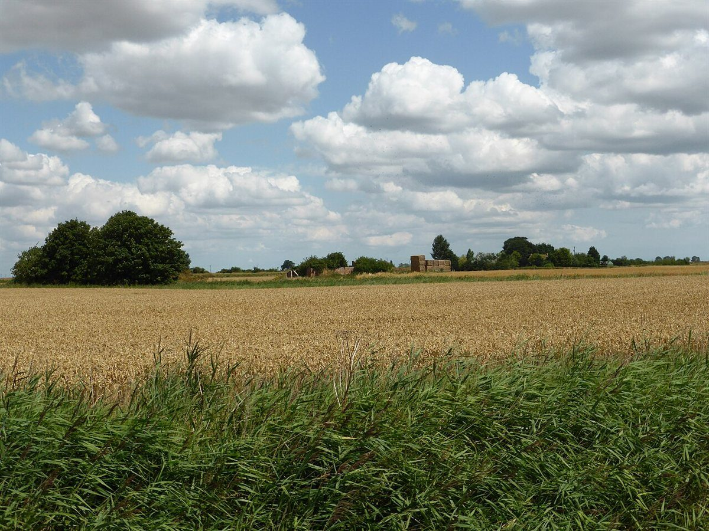
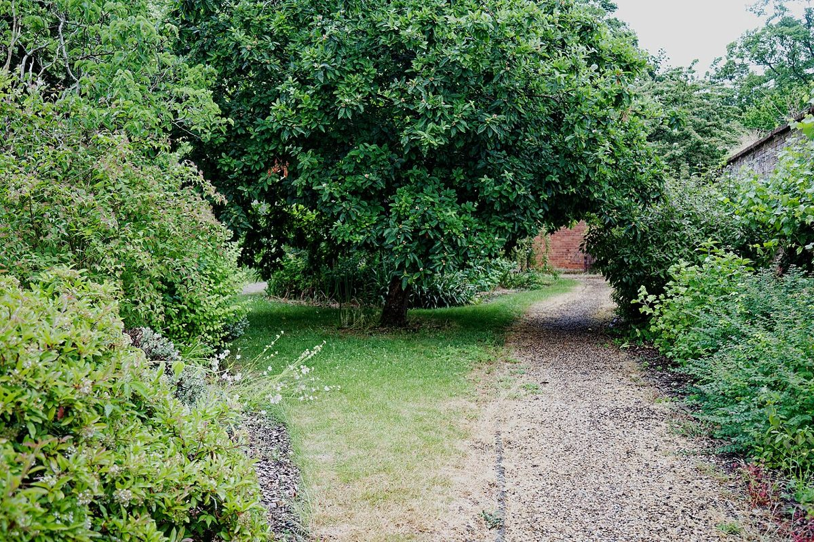

制作側の連想
「大地」と将棋の盤から
La Terre はフランス語で「大地」を意味しますが、店名の由来は分かりません。制作側は、天童市が将棋の駒の産地として知られていること(お店との関係は分かりません)から、「大地」を九×九の盤に見立て、1枚ずつ駒を進めるように各ページを「初手・二手……」と並べました。お店の理念や由来とは無関係の、制作側の連想です。
盤面(イメージ)
九つの大地のかけら。
写真は天童市のものではありません。「大地・実り・ひと息」の雰囲気で選んだ、国外・撮影地不明のフリー素材です。

国外のイメージ(インド) 
撮影地不明のイメージ 
国外のイメージ(英国) 
国外のイメージ(ドイツ) 
国外のイメージ(北米) 
国外のイメージ(米国) 
国外のイメージ(英国) 
国外のイメージ(英国) 
国外のイメージ(スウェーデン)
ご案内
お店のこと(確認できたものだけ)
| 所在地 | 〒994-0025 山形県天童市鎌田本町2丁目5-40 |
|---|---|
| 電話 | なし |
| 営業時間 | 準備中 |
| 定休日 | 準備中 |
| ご予約 | 準備中 |
| 駐車場 | 準備中 |
| SNS | Instagram @cafe.la.terre_2023 |